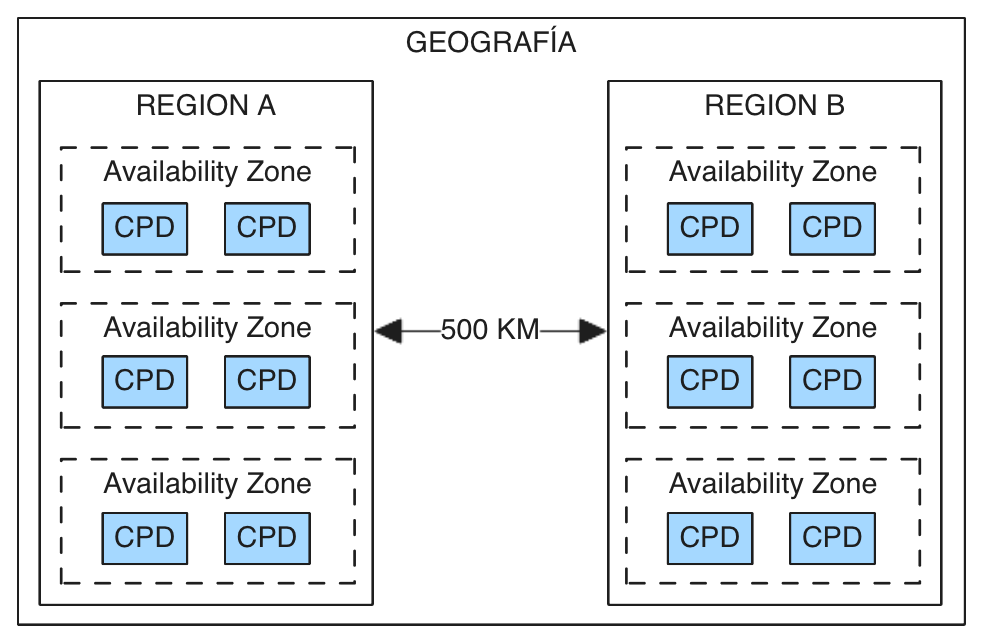

Servicios principales¶
Tema 1: Componentes Arquitectónicos principales Azure¶
Arquitectura global Azure¶
La arquitectura global de Azure se organiza en una jerarquía para ofrecer alta disponibilidad, escalabilidad y tolerancia a fallos:
- Geografías: agrupaciones de regiones que cumplen requisitos legales y de residencia de datos.
- Regiones: áreas físicas (como "Europa Occidental") que contienen varios centros de datos.

Zonas y conjuntos de disponibilidad¶
Son ubicaciones físicas independientes dentro de una región, cada una con uno o más CPDs (Centros de Procesamiento de Datos).
- Cada región suele tener al menos 3 zonas de disponibilidad separadas físicamente (mínimo 500 km entre regiones).
Conjuntos de disponibilidad¶
Permiten mantener las aplicaciones disponibles durante ventanas de mantenimiento o ante errores de hardware.
- Dominios de actualización (Update Domains, UD), de modo que las operaciones de mantenimiento programado, actualizaciones por cuestiones de rendimiento o seguridad se secuencian a través de os dominios de actualización.
- Dominios de error (Fault Domains, FD), que proporcionan separación física de cargas de trabajo distribuidas a través del hardware del centro de datos.
Componentes Azure¶
| Componente | Descripción | Consideraciones |
|---|---|---|
| Recurso | Elemento individual de Azure como una VM, base de datos, red, etc. | Es la unidad más básica. Se despliega en una ubicación concreta. |
| Grupo de recursos | Contenedor lógico que agrupa varios recursos relacionados | Pueden estar en diferentes regiones aunque estén en el mismo grupo. |
| Subscripción | Unidad organizativa que agrupa grupos de recursos y define límites de uso | Puede tener asociadas otras subscripciones para separar entornos y una principal. |
| Administrador de recursos | Servicio que permite crear, actualizar y eliminar recursos de Azure | Es la interfaz que interpreta las plantillas ARM y gestiona el ciclo de vida. |
| Grupos de administración | Contenedores que agrupan suscripciones para aplicar políticas comunes | Facilitan la gobernanza y el control a gran escala en múltiples suscripciones. |
| Azure Portal | Interfaz web gráfica para interactuar con los servicios de Azure | Permite gestionar recursos, ver métricas, configurar alertas, etc. |
Tema 2: Productos principales de carga de trabajo Azure 14¶
Servicios de cómputo¶
Servicios para cargas de servicios genéricas desde contenedores y máquinas virtuales
| Servicio | Tipo | Descripción |
|---|---|---|
| Az Virtual Machines | IaaS | Máquinas virtuales completas en la nube, con control total sobre el sistema operativo y software. |
| Az App Service | PaaS | Servicio gestionado para desplegar aplicaciones web y APIs sin preocuparse por la infraestructura. |
| Az Container Service | PaaS | Plataforma para ejecutar y gestionar contenedores (Azure Container Instances o Azure Kubernetes Service). |
| Azure Virtual Desktop | PaaS | Infraestructura de escritorio virtual que permite acceder de forma remota a escritorios y apps Windows en la nube. |
Comparativa¶
| Servicio | Nivel de control | Ideal para |
|---|---|---|
| App Service | Bajo | Webs y APIs gestionadas |
| Azure Container Instances (ACI) | Medio-Bajo | Contenedores rápidos y sueltos |
| Azure Kubernetes Service (AKS) | Alto | Arquitecturas de microservicios |
| Azure Functions | Muy bajo | Scripts/eventos sin preocuparte de nada |
Servicios de Red¶
Son recursos para crear redes virtuales e interconectar sistemas.
| Servicio | Tipo | Descripción |
|---|---|---|
| Azure Virtual Network | IaaS | Red privada en la nube que permite conectar y aislar recursos de Azure. |
| Virtual Private Network gateway (VPN) | IaaS | Dispositivo virtual que permite conexiones seguras entre redes mediante VPN. |
| Azure ExpressRoute | IaaS | Conexión privada y dedicada entre tu red local y Azure, fuera de Internet. |
Servicios de almacenamiento¶
Ofrecen recursos para almacenar información.
| Servicio | Tipo | Descripción |
|---|---|---|
| Blob storage | IaaS | Almacenamiento de objetos no estructurados como imágenes, vídeos o backups. |
| Disk storage | IaaS | Discos virtuales que se usan con máquinas virtuales, similar a un disco duro. |
| Azure files | IaaS | Almacenamiento compartido accesible mediante el protocolo SMB, como un NAS. |
Niveles de almacenamiento¶
Niveles de acceso al dato.
| Frecuente | Poco frecuente | Archivo |
|---|---|---|
| Datos con acceso regular y activo | Datos con acceso ocasional (≥30 días) | Datos fríos o archivados (≥180 días) |
| Mayor coste de almacenamiento | Coste intermedio | Muy bajo coste de almacenamiento |
| Bajo coste de acceso | Coste moderado de acceso | Alto coste de acceso y recuperación lenta |
Servicios de bases de datos¶
| Servicio | Tipo | Descripción |
|---|---|---|
| CosmosDB | PaaS | Base de datos NoSQL distribuida globalmente, con baja latencia y alta disponibilidad. |
| Azure SQL Db | PaaS | Base de datos relacional gestionada basada en SQL Server. |
| ADB for MySQL | PaaS | Servicio de base de datos MySQL totalmente gestionado en la nube. |
| ADB for PostgreSQL | PaaS | Servicio de base de datos PostgreSQL totalmente gestionado. |
| SQL Managed Instance | PaaS | Instancia de SQL Server con alta compatibilidad, ideal para migraciones. |
Azure Marketplace¶
Azure Marketplace es una plataforma en la que puedes descubrir, probar y adquirir soluciones de terceros que se integran con los servicios de Azure.
- Máquinas virtuales preconfiguradas (con software ya instalado)
- Aplicaciones empresariales (CRM, ERP, seguridad, backup, etc.)
- Sistemas operativos (Linux, Windows Server, etc.)
- Bases de datos y middlewares
- Contenedores, plantillas ARM y servicios gestionados
Permite desplegar soluciones listas para usar con unos pocos clics, muchas de ellas con soporte oficial del proveedor.